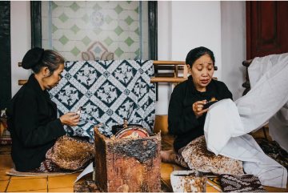
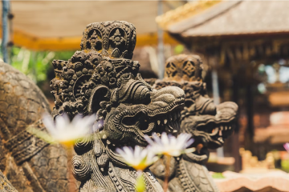
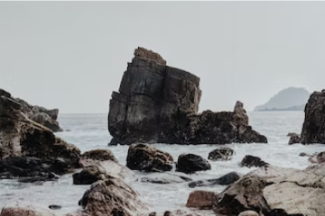

Travel
19 Feb 2022
記事タイトル記事タイトル記事タイトル記事タイトル
本文の一部を表示本文の一部を表示本文の..
DAYDAYTRAVEL

Share your
holiday stories.
Wtire about your experience while on holiday in
various parts of indonesia,and reach a wide
readership

記事タイトル記事タイトル記事タイトル記事タイトル
本文の一部を表示本文の一部を表示本文の..

The taste of Bang Embul's soto betawi
Each region has its own specialty food..

Seeing the beauty of Bali, which has many statues in temples
Talking about Bali is never boring to tell..

Delicious and cheap Semarang street food
There's a lot of street food in Semarang..

Karang bebai beach Lampung for summer vacation
Talking about Bali is never boring to tell..

The upside-down mystical forest in Banyuwangi
This place is most often used as a photo..